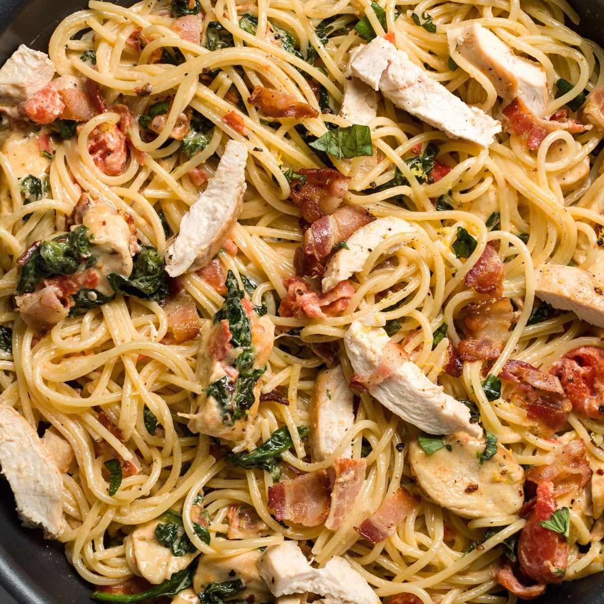

Bacon Chicken Pasta

Description: My favorite pasta that Ashie made for me in college.
Ingredients
- Spaghetti
- Bacon
- Shallots
- Garlic
- Chicken Breast
- Salt
- Black pepper
- Garlic powder
- Red chili flakes
- Lemon juice
- Heavy cream
- Tomato
- Spinach
- Olive Oil
- Grated Parmesan
Directions
- Boil water and salt. Cook pasta til al dente then drain
- Heat pan on medium. Cut up bacon and throw in heated pan
- Julienne shallots and finely chop the garlic
- Drain most of the oil from teh bacon. Throw in shallots and garlic
- Cust chicken into small pieces and season with salt, pepper, garlic powder, and chili flakes
- When shallots are cooked, throw in chicken and lemon juice
- Dice tomato and trim stems off spinach
- When chicken is cooked, pour in cream
- Season with salt, pepper , and parmesan cheese to taste
- Throw in tomato and spinach
- Drizzle olive oil on pasta, pour sauce over and gently combine
- Top with parmesan and red chili flaeks and enjoy